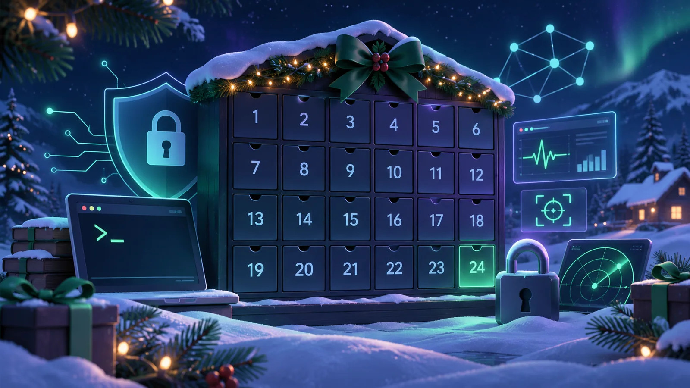

TryHackMe — Advent of Cyber 2026
A planned 24-day practical cybersecurity learning track with daily reflection, sanitized evidence and independent understanding checks.

Learning objectives
Complete one authorized challenge each evening, explain the technique independently, distinguish observations from inference and relate findings to defensive controls and Security+ objectives. MD-102 remains the certification priority.
Daily progress
0 / 24 challenges recorded complete
Room titles and results will be added after release and review.
View all 24 planned days
- 1 Dec — Planned
- 2 Dec — Planned
- 3 Dec — Planned
- 4 Dec — Planned
- 5 Dec — Planned
- 6 Dec — Planned
- 7 Dec — Planned
- 8 Dec — Planned
- 9 Dec — Planned
- 10 Dec — Planned
- 11 Dec — Planned
- 12 Dec — Planned
- 13 Dec — Planned
- 14 Dec — Planned
- 15 Dec — Planned
- 16 Dec — Planned
- 17 Dec — Planned
- 18 Dec — Planned
- 19 Dec — Planned
- 20 Dec — Planned
- 21 Dec — Planned
- 22 Dec — Planned
- 23 Dec — Planned
- 24 Dec — Planned
Tools used
None recorded yet. Only tools actually used in authorized labs will be listed.
Practical evidence
No evidence yet. Reviewed records will distinguish completion, independent understanding, findings, limitations and proposed versus verified controls. No flags, answers, secrets or spoilers will be published.
Final reflection
Pending the event. The final review will reconcile results, skills, gaps, Security+ mapping and follow-up labs. No credential or completed work is claimed.